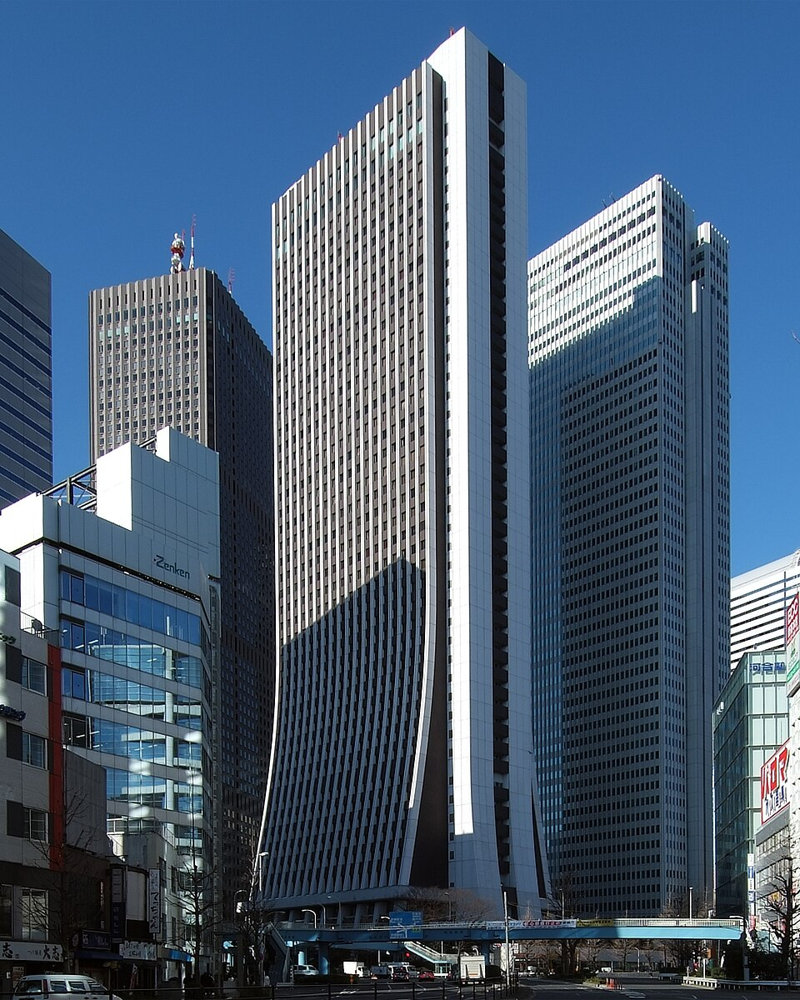
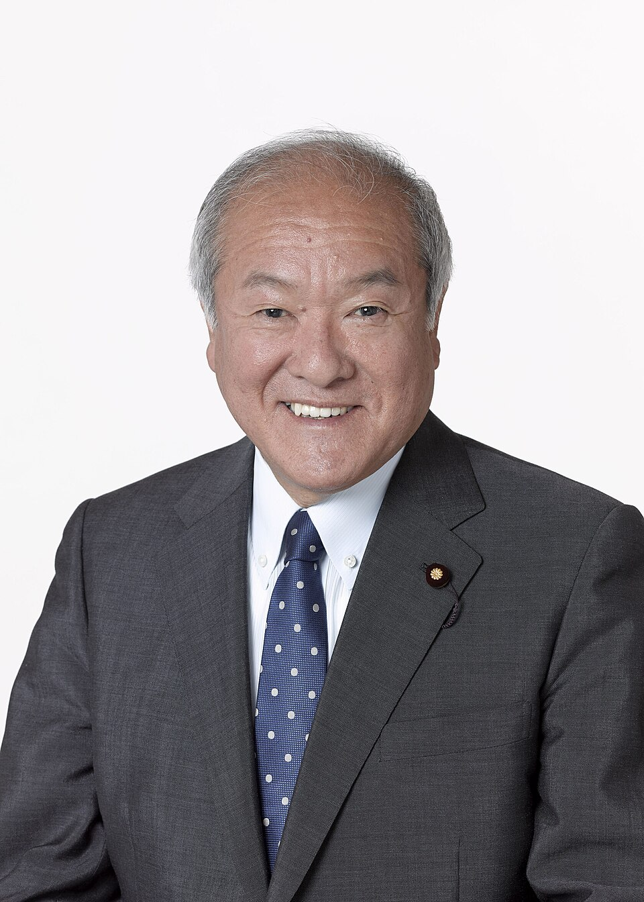

兼
兼重宏行
かねしげ・ひろゆき
代表取締役社長
役割：2023年7月に辞任。不正を知らなかったと主張
その後：保険金不正請求本体の有罪確定判決は確認できない10
2018年〜2026年
ビッグモーターは、修理車両に新たな傷を付ける、不要な修理・部品交換を行う、未実施作業を請求するなどして。損害保険会社への保険金請求を水増しした。金融庁は、広範囲の修理工場で組織的に反復・継続していた実態を認定した。1
背景には、修理部門への高額な売上・粗利目標、未達成者への圧力、経営陣への忖度。内部通報や不正情報の軽視があった。損保ジャパンも疑義を把握しながら取引を再開し、2024年に業務改善命令を受けた。2
2024年5月、伊藤忠商事、伊藤忠エネクス、ジェイ・ウィル・パートナーズが新会社WECARSを発足させ。旧ビッグモーターの全事業を承継した。旧会社はBALMに改称され、損害賠償・融資返済などを担う構造に分離された。3
ビッグモーターは中古車の買取・販売に加え、車検、整備、板金・塗装。自動車保険販売を一体化していた。修理工場は損害保険会社の代理店でもあり、事故車の修理受注、修理見積り、保険金請求。保険契約の販売が同一企業グループ内で結びついていた。金融庁は、損害保険代理店と自動車修理工場の兼業が利益相反とコンプライアンス・リスクを高める構造だったと評価した。1
株式会社ビッグモーター並びにその子会社である株式会社ビーエムホールディングス及び株式会社ビーエムハナテン（以下、これら３社をあわせて「ＢＭ社」という。）は、全国で店舗展開を行っている大手中古車販売業者であり、損保ジャパンを含め複数の損害保険会社から損害保険代理店としての委託を受けて、自動車保険及び自動車損害賠償責任保険（以下、「自賠責保険」という。）の販売を行っていた。 上記①のように損害保険代理店としての事業を含めて、自動車の販売・整備・修理といった一連の自動車関連事業を営むＢＭ社においては、修理車両の車体に損傷を新たに作出して修理範囲を拡大することや、不要な板金作業・部品交換を行うことで保険金を水増し請求するなどの極めて悪質な行為を行っていたことが発覚しており、こうした不正行為に基づく不適切な保険金請求（以下、「不正請求」という。）が、ＢＭ社における広範囲の修理工場で、組織的に反復・継続して行われていた実態が認められている。 ＢＭ社による不正請求はその悪質性から、損害保険業界全体の信頼をも失墜させかねない極めて重大かつ影響力のある事案であり、損保ジャパンのＢＭ社に対する管理・けん制態勢が無効化していた実態は、ＢＭ社に不正行為を惹起させる「土壌」（不正行為等を行い得る「機会」の存在）を生じさせるとともに、結果としてＢＭ社の不正請求を助長し、顧客被害の拡大につながったことを考えると、損保ジャパンのＢＭ社に対する一連の対応には重大な問題が認められると言わざるを得ない。
意味：金融庁が不正を個別工場の逸脱ではなく、広範囲・組織的・反復継続したものと認定し、損保側の管理不全が被害拡大につながったと断じた箇所である。URL同上。
修理部門では、実際の損傷の程度ではなく、1台当たりの粗利や修理売上を基準にした目標が重視された。調査では、ゴルフボールを靴下に入れて車体に傷を付ける、工具で車体をこする、不要なタワー牽引を行う、未実施の塗装を実施したように写真撮影する。不要な部品交換を行うなどの手口が確認された。実在の事故修理に虚偽・過剰な作業を組み込み、保険会社側のアジャスターが確認する見積りと写真に基づいて支払いを受ける構造だった。24
2021年秋以降、日本損害保険協会に内部告発があったと国会で説明された。2022年1月14日には損保ジャパンが情報提供者と面談し、不要なタワー牽引や損傷のない箇所への作業などの疑義を把握した。2022年3月には損害保険防犯対策協議会を通じて疑義情報が各社に寄せられ、三井住友海上は支払済み案件の調査を始めた。ビッグモーターは6月末に自主調査結果を提出したが、損保ジャパンの調査委員会は後の修正が工場長らの指示性を弱めたと問題視した。3567
ビッグモーターとの取引停止後、損保ジャパンは2022年7月に他社に先行して事故車紹介などの取引を再開した。2022年度のビッグモーター取扱保険料約200億円のうち損保ジャパンは約120億円を占め、シェアは60.5％だった。金融庁は、営業部門が取扱保険料や営業成績を重視し、十分な検証や再発防止策の実効性確認をしなかったと認定した。出向者から複数の報告があったにもかかわらず、反発や収益への影響を懸念して対応を放置したとされた。18
ビッグモーターの特別調査委員会報告書は2023年6月26日付で、全国34事業場を調査した。不正の原因として、経営陣への忖度、過度な利益・売上目標、現場への圧力、内部統制の不備。不正を申告しにくい企業風土を挙げた。7月25日、兼重宏行社長は記者会見で7月26日付の辞任を表明し、兼重宏一副社長も辞任した。兼重宏行氏は報告書を読むまで不正を知らなかった、板金塗装部門が単独で行ったとの趣旨を述べたが、これは当事者の主張であり。調査報告書・金融庁認定とは区別される。910
2023年7月には店舗前の街路樹の枯死・伐採が注目され。国土交通省は直轄国道沿い111店舗を調査して10店舗で枯死を確認した。東京都は2024年1月に7か所について告訴状を提出し、警視庁は3月に兼重宏一元副社長ら13人を書類送検した。さらに国土交通省は全国130事業場を監査し、2024年3月時点で102事業場に整備事業停止、指定工場37事業場に指定取消などの処分を行った。公正取引委員会は下請事業者への保険加入要請や発注書面不交付を問題とした。11121314
同時期には、多摩店の36協定超過労働が調査対象となり、2024年3月には労働基準法違反容疑で会社・従業員が書類送検された。街路樹問題では、2022年10月12日に川崎店前の街路樹6本が切断されたとされる日付も資料に記録されたが、個別の指示者や原因については。調査メモが確認できた範囲を超えて断定できない。兼重宏一氏らの書類送検についても、直接的な指示は確認されなかったとの報道があり、2024年5月の不起訴理由は公開資料で確認できない。151617
金融庁・関東財務局は2023年11月、ビッグモーター、ビーエムホールディングス。ビーエムハナテンの損害保険代理店登録を取り消した。金融庁は2024年1月、損保ジャパンとSOMPOホールディングスに業務改善命令を出した。2024年5月1日、伊藤忠商事、伊藤忠エネクス、JWPはWECARSを発足させ。旧会社の全事業を会社分割で承継した。旧会社はBALMに商号変更され、JWPが単独株主となり、損害賠償や融資返済を担う構造に分離された。2026年11月15日時点で、保険金不正請求の全件・全損害額を確定判決で認定した資料は確認できず、主要関係者の保険金不正請求に関する有罪確定判決も確認できない。1811920
2023年8月以降、損保各社は顧客の等級訂正、保険料返還。過払い保険金の回収を進めた。損害保険料率算出機構は、ビッグモーターへの入庫車両について、保険会社の調査結果と同社公表額を基に保険料率への影響を推計した。約90億円という最大想定は、過去5年間の自動車保険全体への影響を示す試算であり、全件の確定損害額と同じではない。損保ジャパンは2025年6月、2015年4月以降に入庫し、同社が直接事故対応した顧客への最終案内を完了したと公表したが。全損害保険会社・全顧客・全訴訟の終結を意味しない。2120
不正請求以外の問題も、行政・司法・取引関係の別々の手続で扱われた。消費者庁は、旧ビッグモーターが中古車30台について「修復歴なし」と表示した行為を景品表示法上の優良誤認と認定し、全事業を承継したWECARSに措置命令を行った。公正取引委員会は、下請事業者に自社での車検や保険加入を要請し、発注書面を交付しなかった行為について勧告等を行った。国土交通省の整備事業場処分、金融庁の代理店登録取消し、損保会社への業務改善命令は、同じ企業活動に関係していても。異なる法令と主体を対象としている。22141318
刑事、行政、民事の結果は同じ事実関係から生じても。対象者と判断時点が異なる。街路樹の器物損壊では元宇部店長の罰金20万円の略式命令が報じられた一方、兼重宏一氏ら12人は不起訴と報じられた。保険金不正請求本体については主要関係者の有罪確定判決を確認できず、損害保険会社が過払い保険金の返還請求や損害賠償請求を進めていることは公表されているが、主要訴訟の全判決・確定額は本調査で確認できない。232425
2026年11月15日時点でも、全体像は一つの判決で確定した状態ではない。調査報告、行政処分、報道、当事者の主張を。確認済みの事実と未確認の事項に分けて読む必要がある。20


| 旧ビッグモーター本社 | 東京都多摩市唐木田 | 会社本部・行政監査の対象 | 18 |
| 旧ビッグモーター多摩店 | 東京都多摩市 | 労働基準法違反調査の対象 | 15 |
| 金融庁 | 東京都千代田区霞が関3-2-1 | 損保会社への行政処分・監督 | 1 |
| 関東財務局 | 埼玉県さいたま市中央区新都心1-1 | 代理店登録取消しの処分主体 | 18 |
| 国土交通省 | 東京都千代田区霞が関2-1-3 | 整備工場監査・街路樹調査 | 13 |
| 横浜地方裁判所 | 神奈川県横浜市中区日本大通9 | 川崎店街路樹事件の公判地 | 16 |
| 東京都庁 | 東京都新宿区西新宿2-8-1 | 街路樹問題の告訴状提出 | 12 |
| 川崎店跡地周辺 | 神奈川県川崎市川崎区 | 街路樹伐採事件 | 16 |
| WECARS本社 | 東京都千代田区 | 事業承継後の新会社拠点。詳細住所は公式発表で未確認 | 19 |
| 損保ジャパン本社 | 東京都新宿区西新宿1-26-1 | 最大取扱保険会社・行政処分対象 | 1 |
金銭の流れは、顧客の事故車をビッグモーターが受け入れ、修理車両に新たな損傷を作出したり、不要な作業や未実施作業を見積りに組み込んだりして損害保険会社へ請求し。保険金が支払われる構造だった。保険金支払いは顧客の等級変更・保険料増加にもつながり、2022年7月には損保ジャパンが取引を再開した。2024年5月には事業がWECARSへ承継され、旧会社BALMが過去責任を担う構造に分離された。3419
かねしげ・ひろゆき
代表取締役社長
役割：2023年7月に辞任。不正を知らなかったと主張
その後：保険金不正請求本体の有罪確定判決は確認できない10
かねしげ・こういち
副社長
役割：環境整備点検・人事評価を通じた影響可能性が報じられた
その後：2024年3月に書類送検、5月に不起訴と報じられた17
いずみ・しんじ
専務・社長
役割：兼重氏辞任後の2023年7月に社長就任
その後：2024年3月時点の会社公表資料で代表取締役社長15
なかはら・たけお
三井住友海上調査委員会委員長・弁護士
役割：不正請求の事実・原因・改善策を調査
その後：調査報告書を公表29
だいとう・やすお
三井住友海上調査委員・弁護士
役割：調査委員会の委員
その後：調査報告書に関与29
いぐち・なおき
三井住友海上取締役常務執行役員
役割：調査委員会の委員
その後：調査報告書に関与29
すずき・しゅんいち
財務相兼金融担当相
役割：損保ジャパン等への検査・行政処分を説明
その後：2023年当時の担当相30
なかむら・けんいちろう
国土交通省自動車局関係者
役割：整備工場監査・行政処分の公表資料に関与
その後：個人の事件上の役割は未確認9
なかじま・まさあき
損保ジャパン経営陣
役割：社外調査委員会の調査対象として登場
その後：具体的個人責任認定は未確認8
なかむら・じゅんいち
損保ジャパン担当部門関係者
役割：ビッグモーター対応の調査資料で扱われる
その後：刑事処分は未確認7
すずき・ゆうや
三井住友海上調査補助者・弁護士
役割：調査を補助
その後：調査報告書に関与29
せき・ひでただ
三井住友海上調査補助者・弁護士
役割：調査を補助
その後：調査報告書に関与29
WECARS共同出資者
役割：WECARSへ共同出資し、BALMの単独株主となったJWPに関係
その後：個人名・生年・担当者は公式発表で確認できない19
WECARS再建担当
役割：再建方針・人材投入・ガバナンス構築を担った
その後：個人名は公式発表で未確認19
WECARS共同出資者
役割：給油所・カーディーラー・レンタカー事業等の運営ノウハウを投入
その後：個人名は公式発表で未確認19
相関図は、旧経営陣と修理現場、疑義を把握した損保会社、調査・行政機関。WECARSへの事業承継関係者を分けて示す。線の種類は、協力、対立、告発、金銭。上下関係を表す。闇の人脈に関する線は、調査メモが認定・指摘した業界構造や取引上の圧力を示し、暴力団等との関係を公的認定と混同しない。
姻戚・血縁・創業家。父が社長、息子が副社長という創業家による経営体制だった。2023年7月、両者が同時に辞任し、創業家支配が事件後に終わった。10
上司と部下。兼重氏の辞任後、専務だった和泉氏が社長に就任した。旧経営陣から新社長への権限移行だった。10
上司と部下。街路樹問題で、環境整備点検や人事評価を通じて店舗側に影響を与えた可能性が報じられたが、直接指示は認定されていない。35
対立・確執。兼重氏は不正を知らなかったと主張した一方、委員会報告書は経営陣への忖度や企業風土を原因として指摘した。10
上司と部下。会社は修理部門に売上・粗利目標を課し、現場では不正な損傷作出・過剰請求が行われた。4
裏切り・告発。2021年秋以降、保険業界に内部告発・疑義情報が寄せられ、2022年には損保各社が調査を開始した。3
対立・確執。金融庁は、営業部門がビッグモーターの営業成績を重視し、法務・コンプライアンス部門も十分なモニタリングを行わなかったとした。1
資金の出し手と受け手。損保ジャパンは2022年度、ビッグモーター取扱保険料約200億円のうち約120億円を占め、最大の保険会社だった。1
競争・確執。損保ジャパンは他社に先行して取引を再開し、営業シェアの維持を優先したと金融庁に評価された。8
対立・確執。三井住友海上は独自調査を進め、2023年12月に調査委員会報告書を公表した。29
対立・確執。東京海上日動は疑義案件を調査し、保険金・等級への影響を確認する専門体制を設けた。36
対立・確執。街路樹器物損壊容疑で書類送検されたが、2024年5月に不起訴と報じられた。24
対立・確執。店舗前の街路樹等を伐採したとして、器物損壊罪で罰金20万円の略式命令を受けたと報じられた。23
資金の出し手と受け手。ビッグモーターは下請事業者に自社代理店扱いの保険加入を要請したとして、公取委の勧告対象となった。14
盟友。両社は伊藤忠エネクスとともにWECARSへ共同出資し、旧会社と新会社を分離して再建を進めた。19
対立・確執。WECARSは「過去との決別」を掲げ、創業家・従来経営陣を新会社の経営に含めない方針を明示した。19
○田村（智）委員 日本共産党の田村智子です。 保険業法改正案のうち、ビッグモーターの不正請求事件について質問いたします。 保険代理店でもある中古車売買大手のビッグモーターが、損傷箇所がない部位について修理作業を行い、また、修理作業を行っていないのに行ったと偽装して、保険会社三社に保険金を不正請求していました。損保も不正請求を黙認していた。ビッグモーターは代理店登録の取消し、大手損害保険会社のうち損保ジャパン、ＳＯＭＰＯホールディングスは業務改善命令の行政処分を受けています。 ビッグモーターの調査報告書によれば、工場長らが、ヘッドライトのカバーを割る、ドライバーで車体を傷つけるなど損傷を新たにつくって、修理範囲を拡大させていたと。利益追求による極めて深刻なモラルハザードだと指摘しなければなりません。
意味：国会で、不正請求の手口と損保側の黙認疑惑が一体の問題として追及された記録である。URL同上。
公的資料で確認できる中心は、暴力団や総会屋ではなく、損保会社の出向者、代理店手数料・保険料の業界構造、下請事業者への保険加入要請。JWPによる旧会社株式取得である。暴力団、総会屋、仕手筋、政治家。海外口座との関係は確認できない。
暴力団 確認できない
総会屋・右翼団体 確認できない
仕手筋 確認できない
政治家 確認できない
海外法人・海外口座 確認できない
損保ジャパン・東京海上日動等の出向者 指摘
損保ジャパン・ビッグモーター 認定
ビッグモーター・下請事業者 認定
JWP・BALM 認定
暴力団 確認できない
ビッグモーターは、経営計画書において、「取引先には自動車の購入及び車検の紹介をお願いする」と定めていた。また、ビッグモーターは、役員、営業本部、経理部及び各店舗の店長が業務上のやりとりを行うメッセージアプリのグループにおいて、令和４年１０月１１日、当時の取締役副社長から各店長に対し、「出入りしてる業者の車は全てウチで購入、買取、車検を徹底させてください」と指示していた。 ビッグモーターは、令和４年２月頃、当時の店長から、下請事業者に対し、当該事業者の給付の内容と直接関係がないにもかかわらず、メッセージアプリを使用して「本部から来てるものですが、出入りをしている車両で車検をどうしているのか教えてください」、「①会社所有車両」「②社員のマイカー」「③その家族の車」が対象になります！などと伝えて車検の状況を報告させた上で、自社で車検を受けない下請事業者については店舗に出入りする際に駐車料金を徴収する旨の本部からの指示を伝え、また、自社で車検を受けない下請事業者は出入りを禁止するという本部からの指示が記載されたメッセージアプリの画面を示して、自社で車検を受けることを要請し、車検を受けさせていた。
意味：保険金請求とは別に、下請業者への購入・車検・保険加入の強制という、取引上の優越的地位の利用が具体化している。URL同上。
| 立場 | 得たもの | 失ったもの | 内容 | 出典 |
|---|---|---|---|---|
| ビッグモーター経営陣・株主 | 修理売上・保険金収入を増やした可能性 | 登録取消し・信用毀損 | 個人別の不法利得額は未確認 | 34 |
| 損保ジャパン | 取扱保険料約120億円・代理店シェア | 業務改善命令・返金等の対応 | 2022年度の取扱保険料約200億円の60.5％ | 1 |
| 顧客 | 返金・等級訂正の対象 | 過剰請求、不要修理、保険料増加 | 個人別損失額は未確認 | 25 |
| 保険会社 | 未確認 | 過払い保険金・調査費用・信用毀損 | 全社合計額は未確認 | 21 |
| 現場従業員 | ノルマ達成・評価・昇進上の利益の可能性 | 雇用不安・組織再編 | 個人別金額は未確認 | 4 |
| 下請事業者 | 取引継続 | 保険加入要請・発注書面不交付 | 少なくとも8事業者に関係 | 14 |
| 伊藤忠系・WECARS | 店舗網・人材・顧客基盤の承継機会 | 再建・コンプライアンスコスト | 承継後の費用額は未確認 | 19 |
| 山口簡易裁判所 | 2024年 | 罰金20万円の略式命令と報道 |
街路樹等の器物損壊罪。確定時期は未確認23
| 東京地検 | 2024年5月 | 不起訴と報道 |
街路樹器物損壊容疑。不起訴理由は未確認24
| 2026年11月15日時点 | 未確認 | 有罪確定判決は確認できない |
保険金詐欺等。未終結・未確認34
| 金融庁・関東財務局 | 2023-11-30 | 代理店登録取消し |
損害保険代理店の体制整備義務違反等。行政処分18
| 金融庁 | 2024-01-25 | 業務改善命令 |
保険金支払管理・代理店管理の不備。行政処分1
| 国土交通省 | 2024-03-29 | 整備事業停止102、指定取消37など |
点検整備未実施・記録簿虚偽記載等。行政処分13
| 公正取引委員会 | 2024-03-15 | 勧告等 |
下請法違反。行政措置14
| 消費者庁 | 2024-07-24 | 措置命令 |
中古車の修復歴表示に関する景品表示法違反。行政措置22
株式会社ビッグモーター並びにその子会社である株式会社ビーエムホールディングス及び株式会社ビーエムハナテン（以下、これら３社をあわせて「ＢＭ社」という。）は、全国で店舗展開を行っている大手中古車販売業者であり、損保ジャパンを含め複数の損害保険会社から損害保険代理店としての委託を受けて、自動車保険及び自動車損害賠償責任保険（以下、「自賠責保険」という。）の販売を行っていた。 上記①のように損害保険代理店としての事業を含めて、自動車の販売・整備・修理といった一連の自動車関連事業を営むＢＭ社においては、修理車両の車体に損傷を新たに作出して修理範囲を拡大することや、不要な板金作業・部品交換を行うことで保険金を水増し請求するなどの極めて悪質な行為を行っていたことが発覚しており、こうした不正行為に基づく不適切な保険金請求（以下、「不正請求」という。）が、ＢＭ社における広範囲の修理工場で、組織的に反復・継続して行われていた実態が認められている。 ＢＭ社による不正請求はその悪質性から、損害保険業界全体の信頼をも失墜させかねない極めて重大かつ影響力のある事案であり、損保ジャパンのＢＭ社に対する管理・けん制態勢が無効化していた実態は、ＢＭ社に不正行為を惹起させる「土壌」（不正行為等を行い得る「機会」の存在）を生じさせるとともに、結果としてＢＭ社の不正請求を助長し、顧客被害の拡大につながったことを考えると、損保ジャパンのＢＭ社に対する一連の対応には重大な問題が認められると言わざるを得ない。
意味：金融庁が不正を個別工場の逸脱ではなく、広範囲・組織的・反復継続したものと認定し、損保側の管理不全が被害拡大につながったと断じた箇所である。URL同上。
損保ジャパンは、2015年５月からＢＭ社の板金・塗装部門への出向を開始し、2023年１月までの間に延べ８名の出向者を派遣していた。これらのうち一部の出向者は、ＢＭ社において、利益を過度に追求する運営実態等が存在するなど不正請求の背景・リスク予兆となる情報のほか、ＢＭ社の全工場の修理費用の見積りを担当している部門が、現場に不要な作業を実施するよう指示している実態など、組織的な不正請求の蓋然性が高いと考えられる事象、不正が確信される事象などについて、損保ジャパンの営業部門や保険金サービス部門に対し、継続的に複数の報告を行っていた。 しかしながら、これらの報告を受けた営業部門や保険金サービス部門は、厳格な指導や調査を実施した場合のＢＭ社の反発や、それに伴う営業成績・収益への影響を懸念して、その対応を放置している実態にあった。また、営業部門や保険金サービス部門をけん制すべき立場にある法務・コンプライアンス部は、こうした不正請求に関する調査態勢を整備していない実態にあった。このように、損保ジャパンはＢＭ社に対して、組織的な対応を講じておらず、結果として、一連の不正請求の検知が遅れ、被害の拡大を招いている。
意味：出向者からの内部情報がありながら、営業上の反発や収益低下を恐れて放置したという、損保側の意思決定の構図を示す。URL同上。
BM 社調査報告書は、「不適切な保険金請求」を定義していないものの、「損傷がないと考えられる部位への修理作業にかかる請求や、修理作業を行っていないのに行ったように偽装した写真による修理費の水増し請求等の不適切な保険金請求事案」（同報告書 1 頁）と記述するほか、「本調査で判明した不適切な保険金請求の態様」として、損傷の作出、損傷の存在・範囲を誤認させる写真撮影、タワー牽引の偽装、不要なタワー牽引の実施、偽装サフ・偽装パテ、不要な鈑金作業や部品交換の実施、高機能塗装（耐スリ）施工の偽装、不要な塗装作業の実施、実際に施工された修理と異なる内容で協定見積りが行われて協定に至るケースを挙げている。
意味：不正の具体的手口を、単なる水増しではなく、損傷の作出・写真偽装・未実施作業の請求まで含む複合的な行為として記録している。URL同上。
2021 年 11 月 4 日、a14 氏及び a9 氏は、b1 氏と面談し、b1 氏に対し、立会事案で対応した現地アジャスターから、実施していない作業やリサイクルと新品の取り違え等が見つかることがあるとの声が上がってきていること、本社（損サ業）にも要注意先として見られてきていること、かかる認識の地域が全国に広がれば必ず BM に対する SKS のブレーキになること、このまま続くと紹介台数も増やせないし、関係を維持していくことが困難となること等を指摘した。 これに対し、b1 氏は、BM の修理工場の品質改善が急務である旨を理解していること等を述べた一方で、SKS が他社との比較で低調な状況であり、このままの状況では、自賠責保険や新店舗の推奨保険会社を当社に割り当てることができない旨を述べた。 2022 年 1 月 25 日、a14 氏及び a9 氏は、b1 氏に対して改めて BM の修理工場の品質改善を申し入れたが、b1 氏は、自賠責保険の割当てを止めることや BM 店舗の指名取消を示唆してきた。
意味：品質改善を求める側と保険契約・紹介台数を管理する側との力関係が、具体的な脅しに近い形で表れている。URL同上。
本日、ビッグモーター社を巡る保険金不正請求事案に関し、損害保険ジャパンおよびＳＯＭＰＯホールディングスに対し、保険業法に基づく行政処分として、業務改善命令を発出いたしました。この命令において、両社に対し、経営責任の明確化や経営管理態勢の抜本的な強化等とともに、業務改善計画の提出とその後の進捗等の報告を求めることとしています。今回、親会社であるＳＯＭＰＯホールディングスによる子会社の経営管理が十分に機能せず、損害保険ジャパンにおいて、保険金不正請求に対する一連の対応に重大な問題が見られたことは大変遺憾であります。両社に対しては、本件を重く受け止め、こうした事態を二度と起こさないよう、抜本的な改善対応を求めてまいります。
意味：行政処分の対象を現場の不正だけに限定せず、親会社の経営管理や経営責任と企業文化まで問う姿勢を示した発言である。URL同上。
○田村（智）委員 日本共産党の田村智子です。 保険業法改正案のうち、ビッグモーターの不正請求事件について質問いたします。 保険代理店でもある中古車売買大手のビッグモーターが、損傷箇所がない部位について修理作業を行い、また、修理作業を行っていないのに行ったと偽装して、保険会社三社に保険金を不正請求していました。損保も不正請求を黙認していた。ビッグモーターは代理店登録の取消し、大手損害保険会社のうち損保ジャパン、ＳＯＭＰＯホールディングスは業務改善命令の行政処分を受けています。 ビッグモーターの調査報告書によれば、工場長らが、ヘッドライトのカバーを割る、ドライバーで車体を傷つけるなど損傷を新たにつくって、修理範囲を拡大させていたと。利益追求による極めて深刻なモラルハザードだと指摘しなければなりません。
意味：国会で、不正請求の手口と損保側の黙認疑惑が一体の問題として追及された記録である。URL同上。
○油布政府参考人 お答え申し上げます。 まず、ビッグモーター事案、一連の保険金不正請求事案は、大変深刻な問題であると受け止めてございます。 お尋ねの兼業の禁止でございますけれども、現状、自動車の販売店等におきましては、自動車保険にそこで加入をなさる方は少なくないわけでございます。仮に、代理店がこうした自動車販売や修理といった事業を兼業すること自体を禁止した場合には、自動車の購入や修理の際にワンストップで自動車保険の加入、相談を行うということができなくなり、結果として顧客の利便性の低下につながるということが懸念されるわけでございます。 こうした懸念を踏まえまして、昨年六月に公表されました、損害保険業の構造的課題と競争のあり方に関する有識者会議の報告書においては、保険代理店の兼業の是非につきましては、兼業自体を禁止するのではなく、兼業に伴う弊害を適切に管理することが合理的であるとの御意見をいただいたところでございます。
意味：事件後も、保険代理店と修理業の兼業を全面禁止せず、利益相反の管理強化で対応する政府方針が示されている。URL同上。
ビッグモーターは、経営計画書において、「取引先には自動車の購入及び車検の紹介をお願いする」と定めていた。また、ビッグモーターは、役員、営業本部、経理部及び各店舗の店長が業務上のやりとりを行うメッセージアプリのグループにおいて、令和４年１０月１１日、当時の取締役副社長から各店長に対し、「出入りしてる業者の車は全てウチで購入、買取、車検を徹底させてください」と指示していた。 ビッグモーターは、令和４年２月頃、当時の店長から、下請事業者に対し、当該事業者の給付の内容と直接関係がないにもかかわらず、メッセージアプリを使用して「本部から来てるものですが、出入りをしている車両で車検をどうしているのか教えてください」、「①会社所有車両」「②社員のマイカー」「③その家族の車」が対象になります！などと伝えて車検の状況を報告させた上で、自社で車検を受けない下請事業者については店舗に出入りする際に駐車料金を徴収する旨の本部からの指示を伝え、また、自社で車検を受けない下請事業者は出入りを禁止するという本部からの指示が記載されたメッセージアプリの画面を示して、自社で車検を受けることを要請し、車検を受けさせていた。
意味：保険金請求とは別に、下請業者への購入・車検・保険加入の強制という、取引上の優越的地位の利用が具体化している。URL同上。
国土交通省では、昨年７月以降、ビッグモーターの全国の１３０事業場に対して監査を実施し、法令違反が認められた事業場に順次、行政処分等を実施しました。また、一連の監査において、同社の本社に関して認められた問題は別添２のとおりです。同社では、指摘された法令違反等を踏まえ改善対策が進められており、国土交通省では、今後その状況を継続的に確認します。 その結果、顧客に対する作業内容の説明、作業の前後の画像の保存等を内容とする「車体整備の消費者に対する透明性確保に向けたガイドライン」を取りまとめました。
意味：国交省の監査が全国規模で行われ、個別店舗だけでなく本社に関する問題も行政対応の対象になったことを示す。URL同上。
消費者庁は、本日、株式会社ビッグモーターが供給していた中古自動車に係る表示について、景品表示法に違反する行為（同法第5条第1号（優良誤認）に該当）が認められたことから、同社から吸収分割により全て事業を承継した株式会社WECARSに対し、同法第7条第1項の規定に基づき、措置命令を行いました。 株式会社ビッグモーターは、中古自動車30台を一般消費者に販売するに当たり、自社ウェブサイト又は「カーセンサー」と称する全国の中古自動車情報を掲載しているウェブサイトにおいて、例えば、令和4年9月3日から同年11月9日までの間に、「修復歴なし」と表示することにより、あたかも、本件30商品は、車体の骨格部位に損傷が生じたことのない中古自動車であるかのように示す表示をしていたが、実際には、本件30商品は、車体の骨格部位に損傷が生じたことのある中古自動車であった。
意味：保険金不正請求とは別の中古車販売表示についても、消費者庁が旧会社の行為を認定し、事業承継会社に措置命令を及ぼした。URL同上。
作業内容の顧客説明、作業前後画像の保存等を盛り込んだガイドラインを策定した。13
本社に起因する法令違反が確認された場合、関連事業場を一括監査する運用を整理した。13
兼業代理店の利益相反、営業目標、保険金支払管理。出向者管理を問題として損保会社の改善を求めた。37
損害保険料率算出機構は不正請求事案を参考純率算定に反映する方針を示した。38
政府参考人は、兼業自体を禁止せず、兼業に伴う弊害を適切に管理する考え方を説明した。3
兼重宏行氏側：報告書を読むまで不正を知らず、板金塗装部門が単独で行ったという趣旨を述べた。10
金融庁・調査報告書：広範囲の修理工場で組織的に反復・継続して不正請求が行われた実態を認定した。34
損保ジャパン側：保険金不正請求を直接実行したのはビッグモーターであり、自社は被害を受けた保険会社だという側面を持つ。25
金融庁：疑義を把握しながら取引を再開し、営業成績を優先して代理店管理・保険金支払管理を適切に行わなかったと認定した。1
政府参考人：兼業自体を禁止するとワンストップの保険加入・相談ができず、顧客の利便性低下が懸念されると説明した。3
事件後の制度論：兼業に伴う利益相反や弊害の適切な管理が求められた。1
伊藤忠商事：創業家・従来経営陣を新会社の経営に含めず、雇用確保と事業継続を目的にWECARSを発足させた。19
旧会社BALM側の構造：会社分割後の旧会社が損害賠償・融資返済など過去責任に対応する構造とされた。19